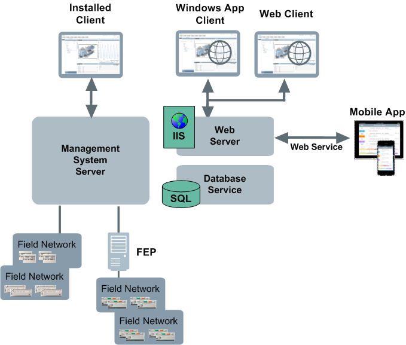
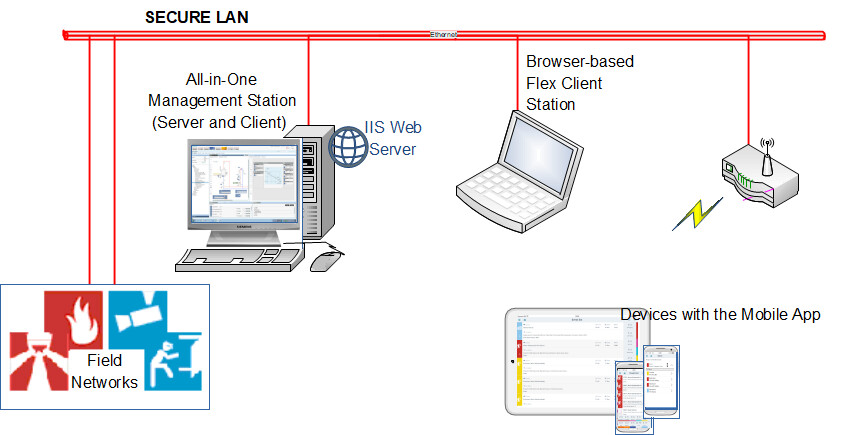
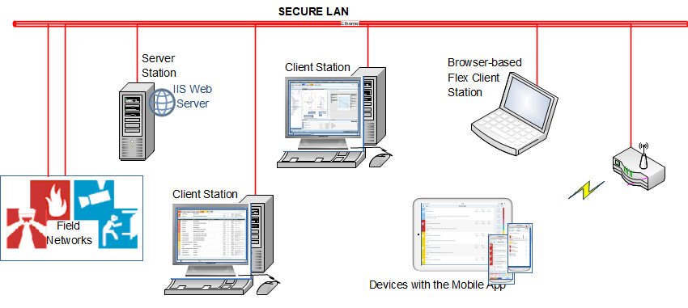
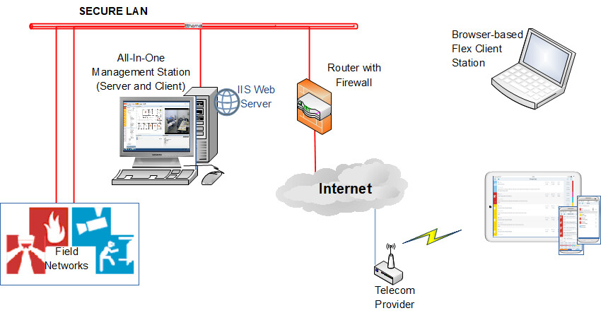
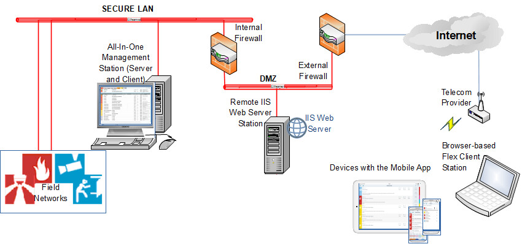
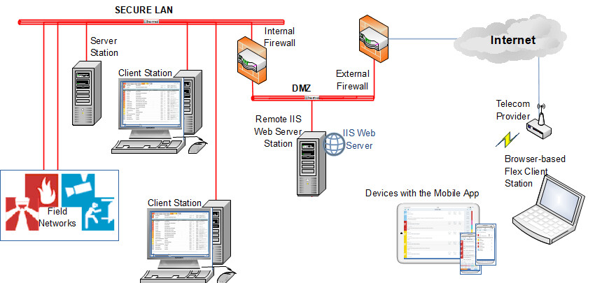

Mobile App Deployment Architectures
IIS Web Server and Web Service Interface
The mobile app connects to Desigo CC through the Web Service Interface (WSI), and requires an IIS web server to be configured in the system:
- The IIS web server can be used for web applications (Flex clients and Windows App clients) as well as for WSI clients like the mobile app.

System Configuration Variants
- Local or Remote IIS Web Server: The IIS web server (to which the mobile app connects) can be hosted on the same computer as the Desigo CC server, or on a separate one.
- Local IIS web server: This means the IIS web server is hosted on the same computer that runs the Desigo CC Server.
- Remote IIS web server: This means the IIS web server is hosted on a separate computer from the Desigo CC Server
- Intranet or Internet Mobile App Deployment:TheDesigo CCmanagement platformcan be configured to connect to the mobile app:
- Over an intranet (site WLAN): In this case, the IIS web server is isolated from the internet, and the app can only connect while the mobile device remains within range of the site WLAN signal.
- Over the internet: In this case, the IIS web server is accessible from the internet, and the app can connect from anywhere.
- All-in-One or Multi-Client Desigo CC Configuration: The management platform itself can consist of just one Desigo CC station, or it can have multiple computers running the Desigo CC software.
- An all-in-one Desigo CC configuration consists of a single computer that runs both the Desigo CC server and client application. There are no separate Desigo CC installed clients/FEPs. However, there can be Flex clients and mobile app clients.
- A multi-client Desigo CC configuration consists of a Desigo CC server computer plus one or more separate installed client (or FEP- front end processor) computers. In addition to this, there can also be Flex clients and mobile app clients.
Local IIS Web Server Mobile App Deployments
You can run the IIS web server on the same computer as the Desigo CC server. However, this type of deployment is recommended only within a secure intranet, because the IIS web server is not isolated from the Desigo CC server. The following images show examples of local IIS deployments for both standalone and multi-client management platforms.



Remote IIS Web Server Mobile App Deployments
For internet deployments, it is recommended to run the IIS web server on a separate computer from the Desigo CC server. To ensure security, this computer should be isolated in a perimeter network (DMZ) and it should not be used as a Desigo CC installed client or FEP. The following images show examples of remote IIS deployments for both standalone and multi-client configurations.


Configuration Workflow for Deploying the Mobile App
For step-by-step instructions see Setup Checklist for Mobile App.
Security Certificate Requirements for Different System Configurations
| Required in all configurations to connect to the mobile app |
Certificate to secure communication between the IIS web server and the mobile app clients. (This is the certificate you configure for the parent website of the WSI web application in the SMC) | If you use a:
NOTE: You cannot use a self-signed certificate to secure the communication between IIS and the mobile app. |
| Required in remote IIS configurations for mobile app support. |
Certificate to secure communication between the IIS web server and the WSI on the Desigo CC Server (This is the certificate configured in the WSI tab of the Project settings) | Not required for local IIS because IIS web server is on same computer as the Desigo CC Server. With a remote IIS web server, this communication can be secured with the Desigo CC server’s private CA host certificate. The corresponding root certificate must be imported into the remote IIS web server computer. |
| Required only for Windows App Client support (not for mobile app) |
Certificate to secure communication between the IIS web server and the CCom Port on the Desigo CC Server. | If you only want mobile app support (but no Windows App clients), you can set CCom Port Web communication to Disabled. If you do also want Windows App client support:
|
| Required only for multi-client systems |
Certificates to secure the communication between the Desigo CC server and its installed clients/FEPs | In an all-in-one system, certificates are not required as there is only one computer. (In SMC client/server communication is set to In a multi-client system, require a host certificate for the server plus a host certificate for each client/FEP. (In SMC, client/server communication is set to |